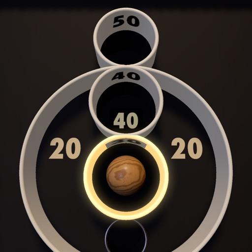

Uphill
A classic roll-ball arcade game. Flick a wooden ball up the maple lane: it leaves the end in the air and comes down on a board of tall rings. The higher the ring, the more it scores: 50 at the top, and the 100s hide in the corners. Every ball rolls down into something. Nine balls a game.
Fold the board up steeper for a bigger score multiplier, up to ×2.4, or lay it back for an easier target. On iPhone Duo, stand the phone on a table like a small laptop and the angle of the raised half sets the slope. On iPad and every other iPhone a slider sets it, and on iPad the game plays full screen in any orientation or window size.
A second table, Pockets, is in Settings: roll the ball up a ramp into glowing pockets instead. Each table keeps its own best score.
No accounts, no ads, no tracking. The game sends anonymous play statistics, a report if it crashes, and measures which of its own ads work; one switch in Settings turns all of it off.